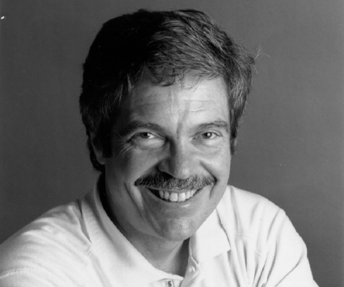

Alan Kay
Breve biografía
Nacido en Springfield el 17 de mayo de 1940. Es un informático estadounidense conocido por sus trabajos en la programación orientada a objetos. Se licenció en Matemáticas y Biología Molecular en la Universidad de Colorado, además consiguió el grado de maestro y doctor en la Universidad de Utah. Durante su etapa en la Universidad de Utah trabajó con Ivan Sutherland en aplicaciones gráficas pioneras.En los setenta trabajó en el centro de Investigación de Palo Alto, llegando a ser uno de los miembros principales de centro. Desarrollaba prototipos de estaciones en red, usando el lenguaje de programación Smalltalk. Apple aprovechó los descubrimientos de Kay para incluirlos en su producto, el Apple Macintosh.
Xerox PARC
Era (y es, actualmente con otro nombre) una empresa de investigación y desarrollo n el que Kay trabajó junto a muchos otros personajes del mundo tecnológico. Si por algo es famoso el Xerox PARC es por la visita que Steve Jobs realizó a este centro de investigación a finales de 1979. Fue allí donde al fundador de Apple se le encendió la bombilla: en el PARC habían inventado la interfaz gráfica de usuario pero no sabían qué hacer con ella. Jobs, por supuesto, sí supo cómo aprovecharla. Aquella creación fue de hecho una de las muchas que se gestaron en un lugar que podría calificarse de mágico para la época. De allí salieron las tecnologías de impresión láser, la conectividad Ethernet, la programación orientada a objetos o la tecnología VLSI de semiconductores. Alan kay explicó que el éxito que tuvo el Xerox PARC estaba en la forma de trabajar de sus ingenieros y en el tipo de filosofía que se adoptaba en un lugar sin jerarquías ni cortapisas. En lugar de objetivos había "visiones", y la financiación del PARC no iba a proyectos para solucionar problemas: iba a los científicos e ingenieros que se encargaban de encontrarlos, no solo de resolverlos. Allí se gestó el Alto, un ordenador adelantado a la época, con una pantalla de alta resolución de 606 x 808 píxeles y una memoria de 512 KB. El grupo liderado por Kay se encargó de crear esa interfaz gráfica de usuario que se basó en la metáfora de escritorio que hoy en día manejamos sin darnos cuenta.
Entrevista a Alan Kay en Palo Alto
Durante su trabajo en Palo Alto, Alan Kay fue entrevistado por múltiples medios, una de esas entrevistas es la siguiente: